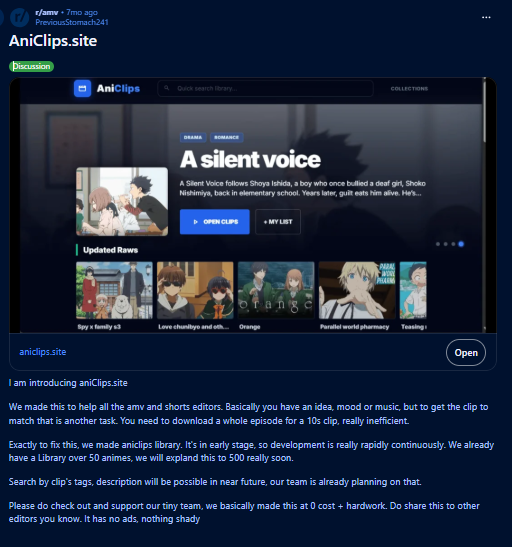
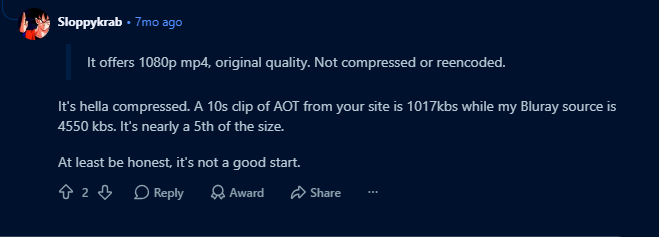

Chapter One — It Was Never Supposed to Become a Website
If you asked me in 2025 whether I'd eventually build a website with hundreds of thousands of anime clips, I would've laughed.
Not because it sounded impossible.
Because I had absolutely no intention of building one.
AniClips didn't begin with a business plan.
It didn't begin with a startup idea.
It didn't even begin with programming.
It began with a YouTube channel.
September 2025 — A Simple Idea
Around September 2025, I came across a YouTube creator whose videos immediately caught my attention.
They weren't flashy.
There weren't insane visual effects or complicated transitions.
Instead, the creator talked about philosophy, friendship, happiness and life while carefully chosen anime scenes quietly played in the background.
The editing felt... effortless.
The visuals didn't distract from the message.
They strengthened it.
I watched one video.
Then another.
Then another.
Eventually I caught myself thinking, "I'd love to make videos like this someday."
Like most people, I assumed the difficult part would be writing the script or editing.
I was wrong.
The difficult part was finding the clips.
The Problem Nobody Talks About
If you've never edited anime before, downloading a clip sounds easy.
Just download the episode.
Cut the scene.
Done.
That's exactly what everyone recommended.
The problem was... I hated every step of that workflow.
My internet wasn't particularly fast.
Storage space wasn't unlimited.
Downloading an entire two gigabyte episode just to use four seconds felt incredibly wasteful.
Even after downloading it, I still had to open a video editor and drag a timeline back and forth for twenty-four minutes until I finally found the scene I wanted.
Then I'd repeat that process again.
And again.
And again.
It didn't feel like editing.
It felt like searching.
Looking back, I don't think I wanted anime clips. I wanted to skip the searching part.
That tiny difference eventually became the entire philosophy behind AniClips.
One Feature Existed Before The Website
Before there was a backend. Before there was a database. Before there was even a name. There was already one feature I knew the tool absolutely had to include: **Hover previews.**
Not because they looked modern. Not because other websites had them. Because I never wanted to scrub through Premiere Pro timelines just to remember whether a clip was the right one. I wanted to move my mouse across the screen, watch the preview, recognize the scene instantly, and keep scrolling.
It's funny looking back now. Version after version has completely rewritten the backend. The processing pipeline has changed multiple times. The storage architecture has changed. Almost everything behind the scenes has been rebuilt.
Hover previews survived all of it. They've been part of AniClips since before AniClips even existed.
Version 1 — Can This Even Work?
Ideas are cheap. Eventually you have to stop thinking and start building. Around early November 2025, that's exactly what I did.
Fortunately, Gemini 2.5 had only recently been released. Like many developers at the time, I spent countless evenings experimenting with AI-assisted programming. I had no experience building something like this. There wasn't a tutorial called "How to Build an Anime Clip Library." So the entire project became one long experiment.
Eventually... something actually worked. Calling it Version 1 feels generous. It was really just a proof of concept. A rough HTML page. A tiny backend. And an unhealthy amount of hope.
Building A Pipeline Out Of Whatever I Could Find
The frontend wasn't actually the difficult part. Processing anime was. Every clip on the website had to come from somewhere. My entire processing pipeline lived inside a single Python notebook running on Google Colab. Whenever I wanted to add a new anime, the workflow looked something like this.
First I'd find a direct source for the episode. Then I'd paste the URL into Colab. Press Run. And wait. Usually around an hour.
The notebook downloaded the episode. Generated thumbnails. Cut the video into clips. Uploaded everything. Updated metadata. If everything went perfectly... I had a new episode ready for the website. If Google Colab disconnected after forty-five minutes... I started again. If the source website stopped responding halfway through... I started again. If something crashed for absolutely no reason... I started again.
There wasn't much automation. There wasn't much reliability either. At the time, I genuinely thought, "This is probably just what software development feels like."
ImgBB, Vidplay... and Pure Optimism
The first version of AniClips wasn't powered by fancy infrastructure. It was powered by whatever worked. Thumbnails were uploaded to ImgBB. Not because it was designed for serving tens of thousands of images. Simply because it accepted image uploads.
Videos were uploaded to Vidplay. Surprisingly, Vidplay deserves more credit than most people realise. It allowed large uploads without requiring an account, had surprisingly generous limits and quietly hosted the entire project for weeks. Neither service belonged to me. Neither was intended for this kind of workload. But when you're building your first project, you don't always choose the perfect tool. Sometimes you choose the only tool that lets you continue. Looking back, that version was held together with optimism more than architecture.
I still remember the first time everything worked together. The page loaded. I scrolled through a few clips. Hovered over one. The preview started playing. I immediately recognised the scene I wanted. Clicked download. Done. No opening Premiere. No scrubbing through twenty-four minutes. No exporting. Just... Done. It sounds completely ordinary now. Back then, it honestly felt like magic. For the first time, the tool I'd imagined months earlier actually existed. Not perfectly. Not beautifully. But it existed. And that was enough to convince me to keep building.
Version 2 — Maybe Other People Need This Too
Originally, AniClips was never supposed to leave my computer. It existed because I needed it. But after using it for a while, one thought kept coming back. "If this solved my problem... surely it solves someone else's too."
That simple question completely changed the direction of the project. Around late November 2025, I started preparing the prototype for something I'd never originally planned: A public release.
One of the first major changes happened behind the scenes. Even though Vidplay had been surprisingly reliable, I didn't want the future of the project depending entirely on third-party hosting. Around this time I built the first version of what would later become the GitHub Swarm storage system. Compared to today's implementation, it was incredibly primitive. But it represented something much bigger. For the first time, AniClips was beginning to own its own infrastructure instead of borrowing someone else's. Looking back, I think this was the moment AniClips stopped being an experiment. It started becoming a real project.
December 2, 2025
On December 2nd, 2025, I bought the aniclips.site domain. Looking back, buying the domain wasn't technically important. The website already existed. The code already worked. But psychologically... Everything changed. Up until that day, I could always tell myself, "It's just a little side project." Buying the domain quietly removed that excuse. Now it had a name. Now it had an address. Now anyone could visit it.
The website wasn't finished. Not even close. The backend was still almost entirely manual. Every anime still required me to process it by hand. There were no workers. No automation. No queue system. No dashboard. Just one person, one Colab notebook and an idea that somehow kept working.
My First Reddit Post
A few days after launching the website, I made my very first post on r/AMV. I wasn't trying to market a startup. Honestly, I just wanted to know whether other anime editors found the idea useful.

Reading that post today makes me smile. I proudly wrote that the website already had around fifty anime and that I planned to expand it to five hundred "very soon." At the time, fifty anime felt enormous. Processing each one still took hours. Five hundred sounded almost impossible. Today, the library contains more than 200,000 clips. Back then, I couldn't even imagine building something that large.
The responses were encouraging. People understood the idea almost immediately. Some started using the website. Others shared suggestions. For the first time, AniClips wasn't just solving my own problem anymore. It was solving someone else's too.
To be continued...
Chapter Two — The Comment That Changed Everything
The first few weeks after launch were exciting. Not because the website suddenly became popular. It didn't. Most days only a handful of people visited. But that wasn't the point. For the first time, complete strangers were using something I'd built. Every returning visitor felt like proof that the idea itself made sense.
The website slowly grew. New anime were added whenever I had enough free time to process them. Each new series still followed the same painfully manual routine: Find the source. Paste it into Google Colab. Wait. Hope nothing crashed. Repeat.
Looking back, it almost feels ridiculous. The entire library depended on one person pressing Run. If I got busy... Nothing happened. If my internet stopped working... Nothing happened. If Google Colab decided it had enough for the day... Nothing happened. The website worked. The production line didn't. At the time, I didn't fully appreciate how dangerous that architecture was. I would soon find out.
The Website Slowly Grew
Over the following weeks, AniClips expanded little by little. Every processed anime felt like a small victory. There wasn't any automation. No background workers. No queue system. Every new addition represented another evening spent waiting for notebooks to finish processing. Eventually the library reached around sixty-four anime. Seeing that number felt unbelievable. Just a few months earlier, the website hadn't even existed. Now people were actually browsing it.
Sometimes I'd open the analytics page simply to watch visitors moving around the site. It never stopped feeling strange. Someone, somewhere in another country, was using a tool that only existed because I didn't like downloading torrents.
Version 3 — The Rewrite Nobody Saw
Around this time I started working on what would eventually become Version 3. Ironically, almost nobody noticed it. There were no shiny new buttons. No redesigned homepage. No dramatic announcement. Most users probably assumed development had slowed down. In reality, I was rewriting the most important part of the project: The processing pipeline.
The original workflow had one fundamental problem. It depended entirely on me. Every anime. Every episode. Every processing job. Every upload. If I wasn't sitting at my computer, the library simply stopped growing. That wasn't sustainable. So instead of building new features, I started building something users would never directly see: Automation.
Version 3 became my first serious attempt to remove myself from the production pipeline. It wasn't complete. It wasn't particularly elegant. But for the first time, I started thinking less about processing anime... and more about building a system that could process anime.
Looking back now, Version 3 wasn't really a finished release. It was an experiment. A bridge between the handcrafted website I had originally built and the automated platform I wanted AniClips to become. Nearly every major idea that powers Version 4 first appeared during this period.
Then Came One Reddit Comment
Sometime around late December 2025 to early 2026, another Reddit comment appeared. It was short. Direct. And impossible to ignore: "It's hella compressed."
The commenter compared one of my Attack on Titan clips with a Blu-ray source. The difference wasn't small. The bitrate was almost five times lower. Then came the sentence that stuck with me: "At least be honest, it's not a good start."

I'll be honest. Reading that wasn't fun. Nobody enjoys having their work criticised. My first instinct was the same as everyone else's: Maybe they were being too harsh. Maybe they expected too much. Then I opened both videos side by side. And within a few minutes, I stopped trying to defend the website. They were right. The clips were convenient. The quality wasn't.
It Wasn't An Encoding Problem
At first I thought the fix would be easy. Increase the bitrate. Change FFmpeg settings. Use a different encoder. Problem solved. Except... nothing was that simple. The more I looked into the processing pipeline, the more obvious something became. The low quality wasn't really the problem. It was a symptom.
The original pipeline had been designed around convenience. It downloaded from lower-quality web sources because those were easy to automate. That decision had made Version 1 possible. Now it was preventing AniClips from becoming the website I actually wanted to build. Improving quality wasn't going to happen by changing one line of code. It meant changing where every episode came from. How every episode was processed. How clips were generated. How storage worked. Almost everything. The criticism hadn't revealed one bug. It had exposed the limits of the entire architecture.
Sometimes You Have To Stop Moving Forward
For about a month, almost nothing happened publicly. Users probably assumed development had slowed down. In reality, the opposite was true. I deliberately stopped adding new anime. That wasn't an easy decision. Every new series added to the website also added more content that would eventually need replacing. The more I thought about it, the less sense it made to keep expanding a system I already knew I was about to rebuild.
So instead of growing the library... I started designing Version 4. At first, I thought Version 4 would just improve quality. Then I began writing down everything that bothered me about the existing system. The list became surprisingly long: Manual processing. No queue. No workers. No dashboard. No standard output format. No way to scale. No future-proof architecture.
By the time I finished the list, I realised something: I wasn't planning an upgrade anymore. I was planning a replacement. The website users saw wasn't changing. Everything underneath it was. And if I was going to rebuild it... I wanted to make sure I never had to rebuild it like this again.
End of Chapter Two. Next: Chapter Three — Burning It Down to Build It Better.
Chapter Three — Burning It Down to Build It Better
By April 2026, I had reached a decision. Version 4 wasn't going to be another update. It wasn't going to be Version 3 with a few improvements. It had to replace almost everything. So, the website went offline. Visitors saw a maintenance page. Behind the scenes, AniClips was being rebuilt from the ground up.
Building A Factory Instead Of A Workshop
The first versions of AniClips worked like a small workshop. Every episode passed through me. I found the source. I started the processing. I waited. I uploaded the results. It worked... But it could never scale. The more anime I wanted to add, the more hours I personally had to spend babysitting Google Colab. Eventually I asked myself a different question: What if I wasn't the one processing anime anymore?
Instead of building a better notebook... I started building a production system. The first piece was an administration dashboard. Rather than manually hunting for episode links every single time, I could now simply search for an anime, choose the torrent release I wanted and add it to a processing queue. That queue became the heart of Version 4.
Once an anime entered the queue, I didn't have to touch it again. Google Colab workers would automatically claim available jobs, download the torrent, normalize the source, generate thumbnails, cut the episode into clips, encode multiple versions and upload everything back to the server. One worker could process anime. Five workers could process anime. Ten workers could process anime. The architecture no longer depended on me sitting in front of my computer pressing Run. That single change probably saved hundreds of hours over the following months.
Finally Fixing The Quality
The Reddit criticism had done exactly what good criticism should do: it forced me to confront a weakness I had already been avoiding. Version 4 abandoned the low-quality web sources used by the earlier pipeline. Instead, processing now started directly from torrent releases, giving the encoder much cleaner source material. Every episode also produced two separate versions:
Fast Clip
Optimized for speed. Downloads instantly and is perfect for mobile video editing apps (Alight Motion, CapCut) or mapping draft tracks.
High Quality Clip
Native bitstream file format. Designed for editors who demand absolute pixel clarity for color-grading, complex masking, or large exports.
Instead of forcing everyone into the same compromise, users could simply choose whichever version suited their project. It was a surprisingly simple idea. Looking back, I'm surprised I hadn't built it earlier.
The Feature Almost Nobody Notices
One feature in Version 4 is almost invisible. Most people have probably used it without ever realizing it exists. Every clip downloaded from AniClips passes through a lightweight encrypted delivery system. Not because I wanted to build complicated DRM. In fact, it isn't really DRM at all. Its purpose is much more practical.
AniClips stores an enormous number of files. Without some protection, someone could bypass the website completely, crawl the storage backend and mass-download the entire library with automated scripts. That wouldn't just consume bandwidth. It would make the website itself almost pointless. The encryption isn't designed to stop determined people. Nothing like that really exists. Instead, it quietly discourages automated scraping while remaining completely invisible during normal use. If you're simply browsing clips and downloading what you need... You'll probably never even notice it's there. That's exactly how I wanted it. The best infrastructure is the infrastructure users never have to think about.
The Hardest Decision
Version 4 solved almost every technical problem I had written down. Unfortunately... it created one enormous problem. Everything from the previous website was incompatible. The storage architecture had changed. The processing pipeline had changed. The metadata format had changed. Even the way files were delivered had changed.
For a while, I looked for a way to migrate everything. A conversion script. Some clever workaround. Anything. Eventually I accepted reality: There wasn't one. Every anime processed by the old pipeline had reached the end of its life. All sixty-four of them.
Deleting them wasn't dramatic. It wasn't emotional. It was simply the correct engineering decision. Keeping incompatible content would have forced every future version of AniClips to carry around the mistakes of the past. Sometimes rebuilding software means accepting that your previous work no longer belongs in the future you're trying to build.
So... Every anime disappeared. The library returned to zero.
Starting Again
From the outside, it probably looked strange. The website had fewer anime than before. Months of work had vanished overnight. But underneath, everything was different. Adding new anime no longer required manually running notebooks. The processing pipeline was automated. The storage system was designed to grow. Every new clip followed the same standardized format. That last point was especially important. Version 4 wasn't only built for Version 4. It was built so future versions wouldn't have to repeat the same painful rewrite. For the first time, I felt like I wasn't just building features anymore. I was building a foundation.
Looking Back
Today, AniClips contains more than 203,878 clips across 100+ anime, and that number continues to grow. People sometimes ask what feature I'm most proud of. It's never an easy question to answer. Hover previews are probably the most recognizable. The processing pipeline took months to redesign. The GitHub Swarm storage system solved problems most users will never know existed. The encrypted delivery system quietly protects the library every single day.
But if I had to choose one thing... It wouldn't be any of those. It would be the philosophy that survived every version. Every major decision, every rewrite and every architectural change came back to one simple question:
"Will this help editors spend less time searching and more time creating?"
That question existed before AniClips had a name. It existed before the first line of backend code. It survived four major versions. And it's still the question I ask before building anything new. Version 5 is already being planned. Not because the website needs more features. Because I still remember what it felt like sitting in front of a timeline, searching through twenty-four minutes of video just to find one five-second scene. AniClips exists because I wanted to solve that problem. Everything else—the website, the community, the hundreds of thousands of clips—grew from that single frustration. Looking back, I never really set out to build an anime clip library. I just wanted to spend less time searching. Somehow, that became AniClips.
Thank You for Supporting the Library
Whether you have downloaded one clip or hundreds, your support helps me refine the pipeline and understand what editors actually need. There's still a massive road ahead, but for now:
Welcome to AniClips V4
movie Open the V4 Library